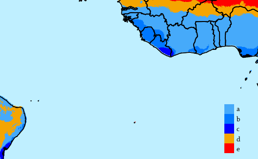
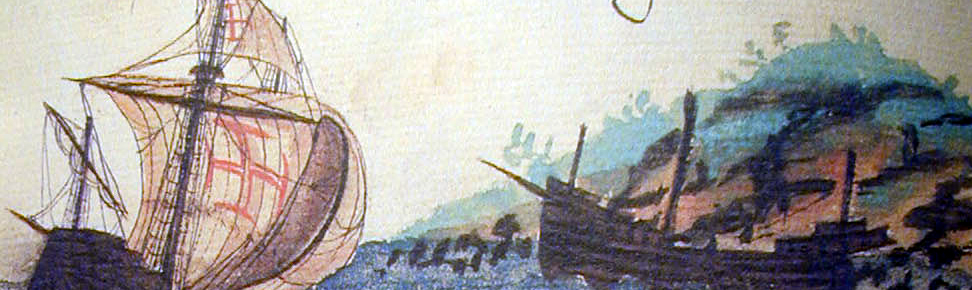
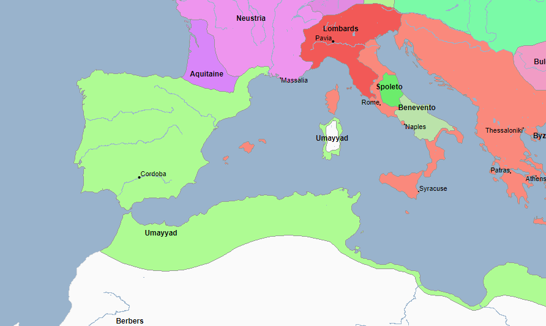
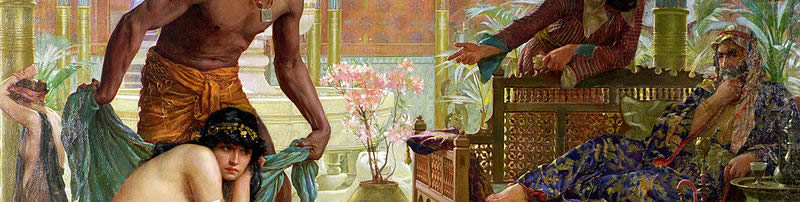
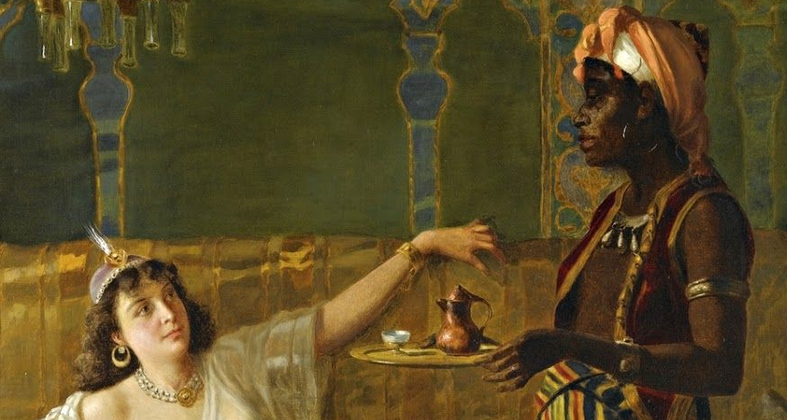
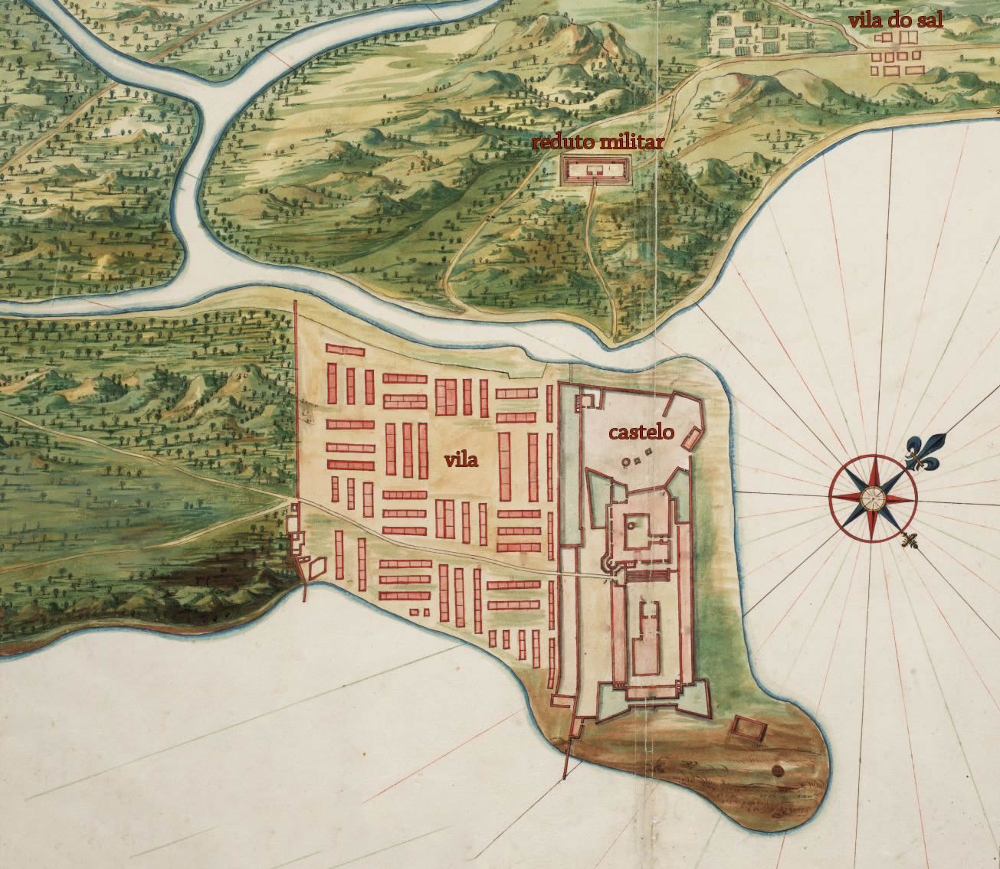

🦀 Kalungas - A Guiné
Olá amigas leitoras e viciadas em um mapa ou outro. Antes do meu hiato onde vou precisar me dedicar mais a
computação e menos a escrita por um tempo, eu decidi avançar na linha do tempo e contar a janela histórica
anterior a invasão holandesa.
Crooonologicamente, os textos mais recentes já estão tratando dessa época: "História do Bolo de Rolo" e "Quando
a Inglaterra invadiu Pernambuco", por exemplo, são textos inseridos nesse contexto. Porém, é preciso averiguar
mais de perto COMO começou essa história de escravidão em Recife (e no Brasil), pra que se entenda como se forma
o povo da gente. Aqui vamos precisar voltar no tempo um pouco para melhor sedimentar as ideias. Para isso,
dividi essa história em três partes, um texto para cada porto da África de onde sairam milhares de pessoas com
destino ao Recife de forma forçada. Agências de marketing podem odiar esse fato e tentar esconder como for, mas
nosso povo é preto.
Segue o texto, querida.
👣👣👣

A Guiné. Recorte do mapa mundi de Cantino (1502).
O Golfo da Guiné
A praia foi um dia um local que cumpria o papel de conexão com os orixás e divindades de toda aquela gente. De
uma diversidade imensa, o litoral da Guiné era habitado por diferentes povos nas terras úmidas e alagadas,
parecidas com o Recife, onde o deslocamento ao interior também se dava através da navegação de rios.

Classificação de Köppen-Geiger para os climas do litoral do nordeste brasileiro e a Guiné.
Climas (a) tropical de savana, (b) de monções, (c) floresta tropical, (d) semi-árido quente e (e) árido
quente.
A região é lar de vários impérios que, na dança das sociedades, cresceram e diminuiram. Por ali co-existiam os
povos de Aja (que daria origem ao reino de Daomé), de Ifé, Bérberes, do Mali e outros, espalhados pelas bacias
dos rios Senegal, Gâmbia, Niger e a extensa malha fluvial até o lago Chade. Dentre as línguas ali faladas estão
o iorubá, o igbo, o fula, o zulu e outras tantas.

Recorte de mapa dos grupos linguísticos atuais da região da Guiné.
Em contato com os povos da região da Guiné estavam os muitos bérberes, os habitantes e atravessadores do
deserto. Com a mediação desses atravessadores do deserto, os povos da Guiné tinham acesso ao mercado muçulmano
do Mediterrâneo. De fato, entre essas comunidades subsaarianas (ou seja, no Guiné, ao sul do do deserto do
Saara) se praticava o islã.

Sentado sobre o Mali, o rei Mansa Musa é representado segurando uma pepita de ouro no atlas
catalão de Abraão Cresques (1375).
A Guiné, região rica em minérios, era uma importante fornecedora de ouro, prata e diamantes
para os povos pós-romanos (aqueles reinos que se partiram depois da queda de Roma). De fato, um rei do Mali, de
nome Mansa Musa, que viveu entre os séculos 13 e 14, carrega o título de homem mais rico da história
humana, uma vez que o ouro tão comum no seu reino era valiosíssimo para os outros povos. Esse ouro era
mercadoria dos povos da Guiné, passando pelos atravessadores do deserto, até a Europa e a Arábia.

Esculturas do povo de Ifé datadas entre os séculos 14 e 15. Hoje, Ifé é uma cidade da atual
Nigéria.
Eis que na praia, local de contato com o outro mundo*, surgem homens em grandes barcos aterrorizando as pessoas
dali.
* A palavra kalunga, que significa praia, também é o nome dado ao local habitado pelos deuses ovimbundos, povo
que
habitava o
litoral sudoeste do continente africano. A praia é uma analogia natural desse povo ao outro mundo, o
mundo das
divindades.
🌊🌊🌊
Gente, um dia desses vocês eram muçulmanos
E seguidos dos assaltos nas praias, intensifiou-se a violência. Sequestros, raides*, ameaças, furtos e todo
assédio que a historiografia tem
preferência por omitir. Essa gente dos grandes barcos queria mesmo, queridos leitores, roubar todos os povos do
litoral porque era mais negócio do que depender dos bérberes do deserto: pelo mar era mais barato e mais
rápido.
A ganância por mais mercadoria a qualquer custo deixa claro que o empreendimento de assalto precisaria se
formalizar.
* Raide é uma palavra nova que aprendi que significa incursão rápida no território inimigo pra tocar o
terror.
E o que era estranho é que para o povo comum entre os igbos, ifés, iorubás e outros, esses marinheiros
assaltantes eram muçulmanos! Por quê uma gente que manteve relação comercial tão bem até então passaria a
tratar o
povo da Guiné de tal maneira? Agora, o que era estranho na interpretação dos locais foram as constantes cruzes
por
todo lado: na costura das velas*, nas espadas e nos adereços desses marinheiros. Já para os mais entendidos, era
óbvio. Essas pessoas não eram muçulmanas, essa cruz representava a fé cristã. E mais, esses homens desempenhavam
uma atividade de cruzada: eles faziam parte de uma ordem de cavaleiros templários.
* Os navios que chegam à Guiné eram navegações mais simples, com velas menores, porem mais robustas do
que as embarcações comuns na época.

A cruz da "Ordem de Cristo" estampava as velas desses barcos que assaltavam o litoral da Guiné.
Recorte do livro de Lisurte de Abreu (Séc. 16).
A cruzada
Com o tempo, chega a informação sobre quem são esses homens. De fato, a Ordem de Cristo havia continuado o
serviço iniciado na Arábia, quando exércitos de cristãos europeus se deslocaram até o Oriente Médio para invadir
as terras muçulmanas e fazer prosperar os negócios da igreja. Entretanto, também era de conhecimento naquela
época que esses cavaleiros de Cristo haviam sido perseguidos e a "ordem dos templários" havia sido extinta na
França e em outros lugares.
Esses alienígenas da cruz vermelha de Cristo que pisavam na praia vinham de algum outro lugar, desafiando à
espada aqueles que manifestassem fé contrária a seu Cristo. Empolgados com a conquista da península ibérica,
esses homens assumiram um nome diferente. Não mais se chamariam "templários" mas cavaleiros da Ordem de
Cristo, porque assim o papa podia prestar auxílio financeiro sem interferir nos affaires
políticos
franceses, que eram contrários a existência dessa milícia da igreja.

No século 8, os omíadas, povo muçulmano, ocupavam toda a península ibérica.
Fugindo da perseguição no resto da Europa, esses templários se esconderam pela península ibérica. A então nova
Ordem de Cristo invadiu o califado Omíada pelo norte e ao longo dos anos foi tomando a península
pouco a pouco. Fato muito ignorado pela educação básica do Brasil, e provavelmente, pela educação do resto do
mundo, as cruzadas não se limitaram ao Oriente Médio e continuaram o estupro do território muçulmano, rasgando a
terra em nome de Jesus, estabelecendo o poder político sobre os povos da península e moldando em condados o que
alguns historiadores consideram como o germe dos estados-nação.

A configuração política do Mediterrâneo no ano 1000. Estabelecidos há séculos na península e
até a conquista total cristã, os muçulmanos ocuparam a Ibéria por 700 anos. Os cristãos começaram a invasão pelo
norte, dando origem a domínios cristãos.
Era literalmente uma atualização das cruzadas praticadas alguns anos
antes contra o Oriente Médio, o que é curioso porque se você parar para pensar, nossa cultura entende como cruel
aquelas histórias de cavaleiros cristãos sendo intolerantes contra árabes no território invadido do Oriente
Médio. Mas no caso da península ibérica... não. É como se aquele território fosse, naquele tempo e ainda hoje,
considerado de direito divino cristão, e sua origem não é questionada ou recontada. A história da origem
daqueles povos que se consideram "de primeiro mundo" é, na realidade, aterrorizante. Esse mesmo terror constrói
nossa história: o domínio cristão conquistado à espada, cruz e sangue, apesar do termo "cristão" hoje ser mero
detalhe.

Muçulmano e cristão dividem a execução de uma das "cantigas de Santa Maria", compilado de
canções populares da Andaluzia (região da península ibérica) publicadas por um rei cristão espanhol. A
tolerância dos povos muçulmanos a
outras religiosidades é um tema muito discutido pela academia hoje. Há também uma resistência ocidental
conservadora que insiste em enquadrar os praticantes do islã como indivíduos fundamentalistas (tanto os atuais
quanto
os daquela época).
Portugal atual, de raiz católica, está
200 anos distante de superar o período de existência dos califados e ainda hoje vive, assim como nós recifenses,
a
imposição forçada desse regime que emana da interpretação (ou de uma variação) da cultura cristã. Indo mais
fundo,
a motivação da igreja católica apostólica romana nunca foi de salvação mas de defesa da hegemonia econômica dos
seus, atravessando feudalismo e capitalismo, e essa nossa percepção do amor real das palavras de Cristo é só, e
somente só, o verniz que nos faz engolir tal controle.
Como uma manifestação do domínio da igreja, havia a necessidade de controle cultural das populações. Assim, a
Ordem de Cristo retomou os nomes dos tempos em que os
romanos ocupavam as terras, em uma tentativa de resgate de um passado que nunca existiu, de um povo que ali
viveu mil anos antes! Dessa forma, essa milícia cristã fundou dentre outros
reinos, o de Portugal.

Duas mulheres muçulmanas jogam "al-jadrez", enquanto uma cristã toca um instrumento. As
vestes da muçulmana da esquerda são trajes típicos da identidade portuguesa atual, um povo que reconhece suas
influências árabes, mas que se assume como sendo 'naturalmente' cristão.
Após conquistar a península, a cruzada continuou para além do mar. Com o auxílio do financiamento de Veneza e
Roma, e apropriando-se do conhecimento arquitetônico, militar, médico, astronômico e matemático que o povo do
muçulmano dominava, o exército católico atinge um bum
tecnológico que o permite chegar a praias um pouco mais distantes, como a costa da Guiné. Importante notar que
os portugueses alcançam essa região enquanto ainda havia guerra contra os muçulmanos "mouros" na península
ibérica.

Judeu e muçulmano em uma partida de "al-jadrez". Conviviam no califado comunidades cristãs,
muçulmanas e judias por setecentos anos, seguidos pelo domínio cristão com a "reconquista" que, como fato ao
longo da história, perseguiu e exterminou os outros demais: cruzadas, escravidão mercantil, inquisição,
imperialismo e holocausto, para deixar fresquinho na memória.
O apoio financeiro da igreja pavimenta uma estrada que facilita um caminho até as Índias aos comerciantes
venezianos, genoveses, florecianos e outros, visando um acesso às mercadorias que vinham do oriente. Depois do
fracasso na manutenção das terras invadidas durante as cruzadas e perdidas aos otomanos, os mesmos investidores
da igreja
utilizam-se dos portugueses (e de outras nações) como cães de caça na travessia deste outro caminho, o contorno
da
África. Em busca de especiarias que não necessariamente eram as hindus, esses navegadores da Ordem de Cristo
ganham acesso aos mercados antes operados pelos muçulmanos, encontrando na Guiné a pimenta, o couro, o ouro e...
seres humanos.
🙏🙏🙏
Tráfico de Gente
De volta as praias da Guiné, as comunidades, assim como na América, possuiam seu próprio ritmo de relações
sociais. Ali os mecanismos da vida em sociedade se desenvolveram normalmente, como em todo o globo onde os
humanos puderam se estabelecer. Comunidades rivais comumente mantinham cativos umas das outras: pessoas
capturadas de comunidades rivais e obrigadas a servir até que recebessem pagamento de resgate. O mesmo acontecia
na Europa. Cristãos sequestravam muçulmanos nas suas praias, só liberando esses cativos mediante pagamento.
Igualmente, muçulmanos faziam o mesmo nas praias cristãs. Tal prática é mais antiga do que a
própria palavra, cunhada pelos romanos, o captivus é o prisioneiro. Mais antigo do que o vocábulo também
é o sclavus, já recorrente nas escrituras bíblicas, o escravo* na antiga Roma era frequentemente um
eslavo (daí a origem da palavra).
* Diante de observação sob lentes atuais acerca do passado, e negando a ideia perpetuante ainda hoje
de que o homem nasce escravo e serve apenas e exclusivamente a esse propósito, utilizo nos textos a
palavra escravizado. Corrente cada vez mais usada, entende-se que nenhum humano nasce com essa marca que
retira o mínimo da dignidade que o torna um ser humano, mas que a pessoa é socialmente marcada por esse conceito
puramente virtual. O ser humano nasce pessoa social, e outra sociedade o faz escravizado.

The Bitter Draught of Slavery, Ernest Normand (1885). A imagem do "harém" como
popularizado hoje tem raízes também na reconquista. A figura da mulher branca escravizada foi (e ainda é)
utilizada como justificativa ao combate violento à "irracionalidade" do homem muçulmano.
A origem da prática de escravidão e cativeiro é difícil de se traçar. Até do outro lado do Atlântico essa forma
de relação social era praticada. O oferecimento do corpo como forma de quitação de suas "dívidas" e a ética
sobre esse mecanismo social, definitivamente rechaçado hoje, é uma discussão sociológica a parte. Aqui eu vou me
ater a inovação cristã portuguesa.

In the harem, Vincent Stiepevich. A ideia da mulher negra escravizada servindo a branca
nos espaços mouros ou otomanos é rara na cultura popular e reflete a construção da narrativa deliberada de
privilégio branco histórico frente a realidade: o serviçal no ocidente é a pessoa racializada.
Conquista portuguesa
Primeiro com assédios, depois com corsários* e finalmente estabelecendo guarda em terra firme. Ao acessar o
mercado guineano em busca de escravizados e especiarias, o negócio operado com a mais avançada tecnologia
disponível, tanto levava mercadorias e escravizados para a Europa quanto descobriu que poderia operar as trocas
comerciais dos locais da Guiné, transportando escravizados de uma praia a outra daquela mesma costa.
* O corsário é o pirata formal, seu trabalho é pago e regulado pelo rei. Já o trabalho do pirata é
ilegal.

As correntes da costa da Guiné: por cima vai pro leste, por baixo para o oeste, com direito a
retornos no meio do caminho. O azul indica menor intensidade no movimento das correntes, já o amarelo indica
maior intensidade.
Do Senegal até o Benin, onde o litoral faz curva e a selva continental se acentua, a Guiné é cortada por muitos
rios. Os assaltos desses portugueses tentavam subir os rios, mas não conseguiam se prolongar. Repelidos pelos
locais ou sofrendo com a barreira epidemiológica da Guiné, assunto para um outro texto, os portugueses conseguem
apenas fixar-se na praia. Com o auxílio de locais que visavam interesses nos negócios portugueses, o tráfico
humano estende suas mãos ao interior da Guiné. A importação de cavalaria e armas de fogo da Europa potencializa
a captura e cativeiro de humanos.
⛓️⛓️⛓️
A partir do recém estabelecido forte de São Jorge da Mina (hoje cidade de Elmina, em Gana), os iorubás
acorrentados têm conhecimento do que se pretendia. Homens, mulheres, idosos e crianças capturadas por mais de
oito meses em prisões no interior e são agora mantidos presos como animais na costa da Mina. Esses iorubás,
ifés, igbos, beninenses e quem
mais fosse feito cativo seriam levados às fazendas de açúcar em ilhas distantes. Longe de suas famílias e
sofrendo a constante humilhação dos milicianos de cristo e seus capachos.

Recorte do mapa do castelo da Mina, Vingboons (1665). Esse castelo, primeiro inaugurado
como ponto de comércio e depois fortificado, foi por muito tempo o maior porto de tráfico humano da história.
Hoje dá nome a cidade de Elmina, em Gana.
Tais fazendas em ilhas remotas da costa africana (Cabo Verde, Madeiras, Canárias, Açores etc) estavam sendo
empreendidas pelos mesmos venezianos, genoveses, alemães e outros financiadores das cruzadas portuguesas.
Verdade seja dita, as primeiras voltinhas de barco pelo oceano Atlântico foram pilotadas por comandantes de
Veneza. Como dito, os venezianos operaram a transferência desse conhecimento aos portugueses cristãos, cujos
estudos foram aperfeiçoados sob a influência moura na escola naval de Sagres. E aquelas fazendas receberam
milhares de pessoas
escravizadas. Até 1475, foram enviados às ilhas e à Europa 15 mil pessoas escravizadas de acordo com o Slave
Voyages Database.

Detalhe do monumento aos descobrimentos em Lisboa. O povo português ainda hoje se apresenta
como cristão por natureza, homem branco desde sempre. A ereção de tal construção (1960) a esse orgulho mascara
quem
realmente eles são e disfarça narrativamente os símbolos de perseguição a outros povos, apesar de estarem
visivelmente escancarados.
Voltando a discutir os símbolos, a cruz da Ordem de Cristo que estampava as velas desses navios tumbeiros* era a
mesma cruz que estampava o brasão da escola de Sagres. Era a mesma cruz do escudo do soldado templário, que
agora escravizava em nome de cristo, como será detalhado em próximos textos. É também a cruz de Vasco da Gama. E
talvez, essa cruz esteja em outros tantos lugares, carregando o orgulho daqueles que operaram as cruzadas contra
os povos muçulmanos, contra os povos da Guiné, do Congo e até hoje contra os povos do Brasil.

* Tumbeiro, como eram chamados no Brasil escravagista esses navios, dada a quantidade de mortos que se
amontoavam nos porões ao longo da travessia do oceano.
Fim da Parte 1
As letrinha subindo no vídeo
A partir da perspectiva guineana é possível perceber a arbitrariedade da posição portuguesa, um dia muçulmana e
parceira comercial, no outro invasor cristão. Todo o orgulho construido sobre as navegações, de fato importantes
na história tecnológica do planeta, abafa o custo desse progresso. A tática de silêncio utilizada por Portugal,
Espanha, França, Inglaterra, Bélgica e tantos outros é a saída mais interessante a esses países, não é nem
possível estimar o tamanho da dívida a esses povos invadidos dos dois lados do Atlântico e no resto do mundo.
Mas eles vão além. O silêncio não é de caráter omisso mas de caráter ativo e constante na educação colonialista.
Como é possível depois das evidências e demonstrações de 500 anos de opressão um país como Portugal continuar
reproduzindo sua história e seus símbolos supremacistas sem retratação, revisão e reparação?
A história de Portugal, do Brasil e do mundo é definitivamente arbitrária, privilegiam as informações que convém
àqueles que estão no poder e escondem, apagam, matam o que não os convém. Como diz a frase de Chinua Achebe, "até que os leões tenham seus
historiadores, a história da caça vai sempre glorificar o caçador". E até que se desenvolvam historiadores
treinados e pautados nos métodos elaborados pelos próprios europeus para registrar a história "da forma certa",
eu venho de forma bárbara e arbitrária, assim como eles, contar a história de quem eu quero, freestyle do
jeito que
meus acessos me permitem, a fim de estimular que se contem mais histórias do povo do Recife.
As Referências
- As informações desse texto foram retiradas da obra O Trato dos Viventes, de Luiz
Felipe de Alencastro (2000) e cruzadas (sem gracinhas ok) com as palestras e entrevistas do professor
Alencastro no YouTube, referência internacional na história do Atlântico sul;
- Os mapas de delimitação política antigos foram retirados do GeaCron;
- Os mapas de corrente marítima foram retirados do Earth
Nullschool;
- Os demais mapas e pinturas já encontram-se referenciados, com exceção da foto do monumento dos
descobrimentos que é de acervo pessoal.